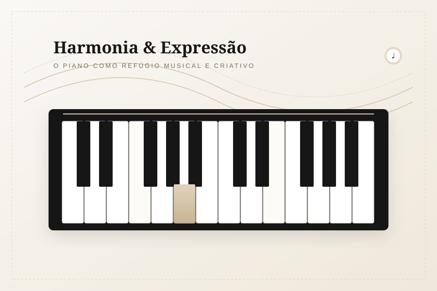
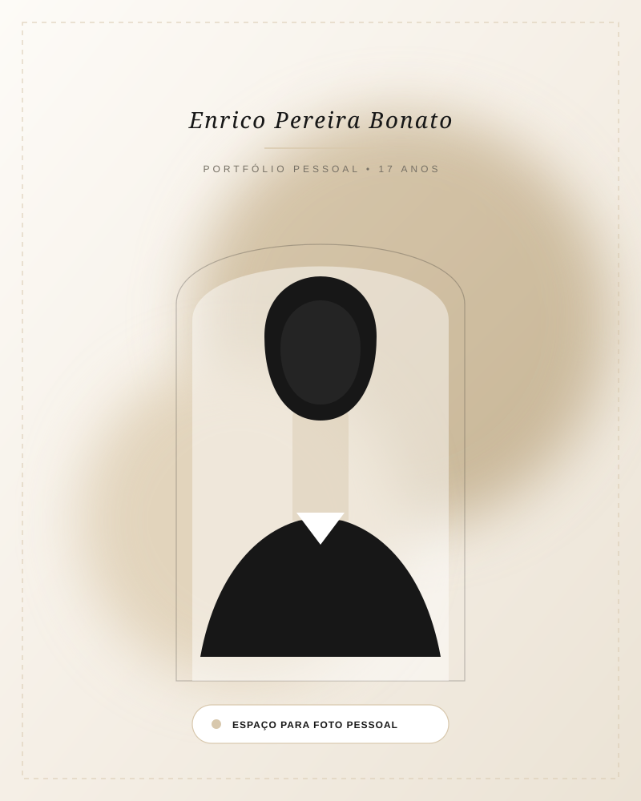
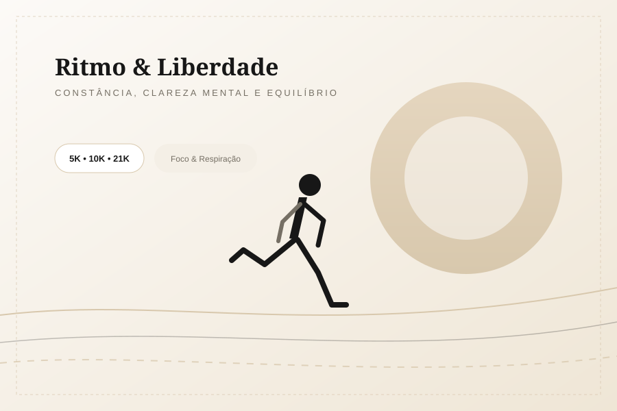
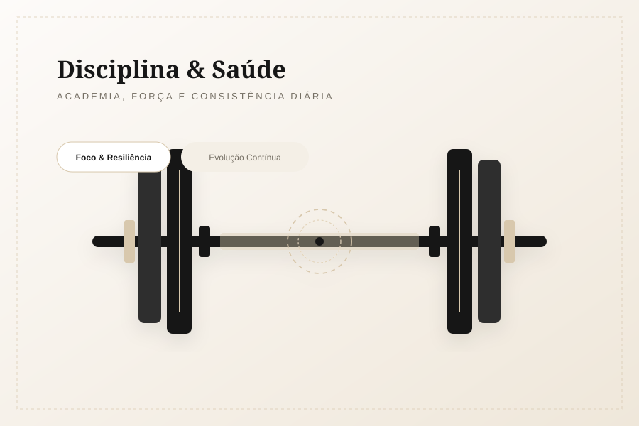
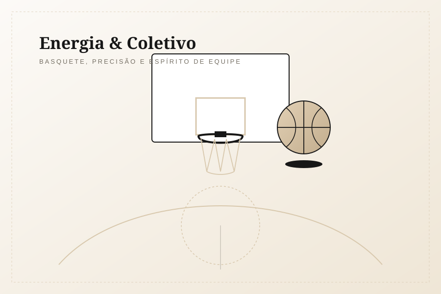
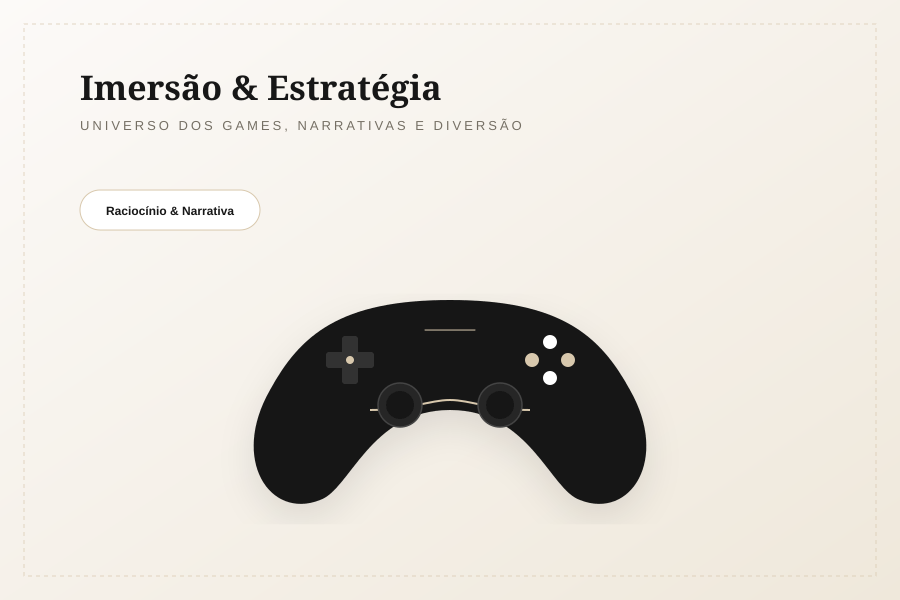
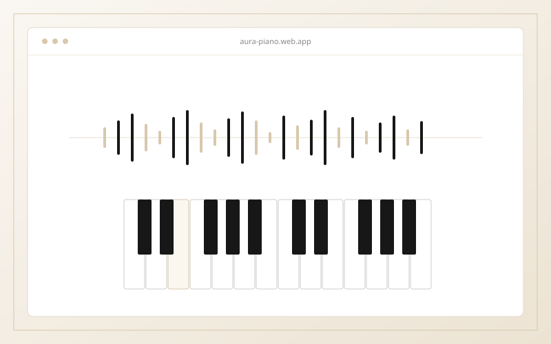
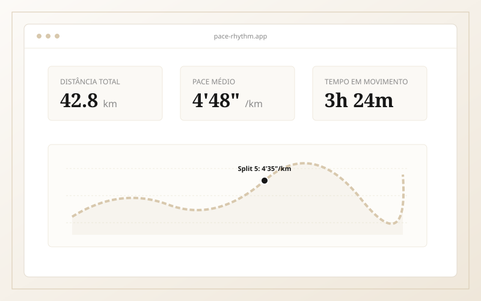
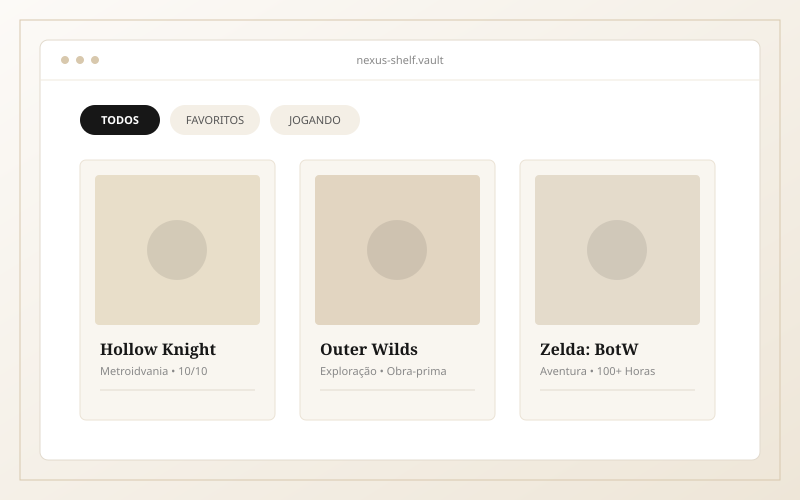
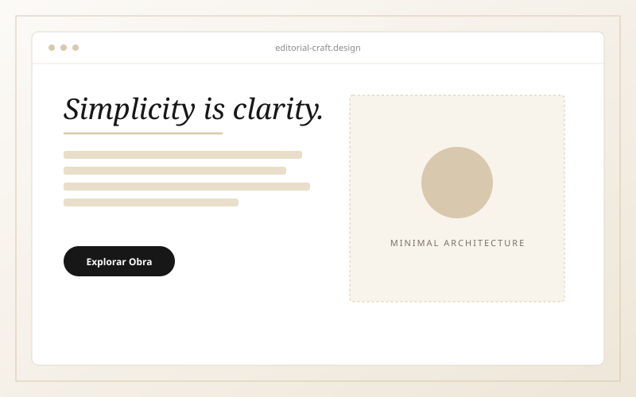

Piano
Tocar piano representa meu lado mais musical e criativo. É onde encontro momentos de silêncio atento, sensibilidade artística e concentração profunda. Cada melodia é um espaço de expressão e calma.
Entre ideias, movimento e criatividade.

assets/images/enrico.jpg)
Gosto de conhecer pessoas, escutar boas histórias e compartilhar risadas.
Equilíbrio emocional para lidar com situações e manter a mente clara.
Vontade sincera de experimentar o novo e desenvolver habilidades.
"Acredito que minha personalidade tranquila, junto com minha vontade de aprender e conhecer coisas novas, representa muito bem quem sou."
Sou Enrico Pereira Bonato, tenho 17 anos e sou uma pessoa sociável, calma e tranquila. Gosto de conhecer pessoas, conversar e aproveitar bons momentos com quem está ao meu redor.
Tenho interesse por jogos, esportes e atividades físicas, como academia, corrida e basquete. Também gosto de tocar piano, um hobby que representa meu lado musical e criativo.
Gosto de experimentar coisas novas, desenvolver minhas habilidades e aproveitar diferentes experiências. Para mim, a vida é sobre encontrar o equilíbrio entre o foco em evoluir e a leveza de curtir o processo.
Uma composição visual dos meus principais interesses — entre notas musicais, passos na pista, superação física e mundos virtuais.

Tocar piano representa meu lado mais musical e criativo. É onde encontro momentos de silêncio atento, sensibilidade artística e concentração profunda. Cada melodia é um espaço de expressão e calma.

Um dos meus principais hobbies. Correr é uma prática de ritmo, liberdade e clareza mental. A cada quilômetro percorrido, organizo os pensamentos e renovo minhas energias.

Dedicação diária aos treinos e ao condicionamento. A academia me ensina sobre paciência, consistência e o respeito pelo processo gradual de fortalecimento do corpo.

O dinamismo da quadra, o jogo em equipe e a tomada rápida de decisão. Um esporte que gosto muito de praticar pelo companheirismo e pela energia vibrante da partida.

Meu fascínio pelo universo dos games. Gosto de narrativas bem construídas, desafios de estratégia e, acima de tudo, dos bons momentos compartilhados com amigos em partidas descontraídas.
Espaço reservado para projetos práticos, estudos e criações. Os itens abaixo são modelos de demonstração prontos para serem substituídos pelos meus projetos reais.

Exemplo ProvisórioUma experiência web minimalista que reproduz timbres de piano no navegador com visualizador de ondas sonoras em tempo real, unindo música e código simples.

Exemplo ProvisórioRegistro visual e intuitivo de treinos de corrida. Apresenta cálculo automático de pace, evolução semanal de quilometragem e gráficos sem poluição visual.

Exemplo ProvisórioCatálogo curado de jogos favoritos, anotações de progresso e reflexões sobre trilhas sonoras e narrativas marcantes, construído com foco em legibilidade.

Exemplo ProvisórioExploração de design editorial para a web: proporções harmônicas de grid, contrastes serifa/sem-serifa e microinterações táteis e tranquilas.
Sinta-se à vontade para me enviar uma mensagem, trocar ideias sobre esportes, música, jogos ou novos projetos.
Você pode me contatar diretamente por e-mail ou pelas redes abaixo. Respondo com prazer.
Preencha os campos abaixo. Todos os dados são validados instantaneamente.